My First Intro to Data Science
May 10, 2019: The airport was buzzing as I sat at the gate, nervously tapping my foot, waiting to board a flight to Pune. I wasn't alone, my parents were with me. I was 20, and my parents thought I wasn't ready to travel to a new city alone. It's funny to look back now that I live alone in an entirely different country miles away.
You see, throughout my first two years of undergrad, I had been drifting. No clear direction, minimal effort, just going through the motions. When third year arrived and everyone scrambled for summer internships, I halfheartedly submitted applications. Then, through what seemed like cosmic intervention, my father's networking prowess materialized into an opportunity at Fujitsu, India. His university friend, now in an executive position, had created a spot for me - not a formal role, but a chance.
On my very first day, I met the two men who would shape my professional identity: Vishal sir and Amit sir.
"Just call us by our names," Amit said during our introduction.
"You're in corporate now."
I nodded awkwardly, responding, "Okay sir. Ah, sorry sir... it'll take me some time."
How could I abandon the respectful conventions instilled since childhood in a single conversation?
Amit, my direct mentor, was remarkable, a young engineer who we watched become one of Fujitsu's few distinguished engineers. Though not much older than us interns, he commanded tremendous respect. On day one, he handed me a hard copy of "Hands-On Machine Learning with Scikit-Learn". What followed was an intensive routine: reading chapters, absorbing concepts, then being thoroughly quizzed by Amit each evening.
I had already met my fellow interns, five of us total. Two had been with the company for six months, working on tracking empty parking lots using deep learning. Their project fascinated me, leaving me wondering what challenges awaited me. The other two interns were beginners like myself, and we quickly formed a study group to navigate this new terrain together.
My only technical knowledge entering the internship was Python, NumPy, and Pandas (A modest foundation at best). Soon I was assigned a multivariate time series problem, a concept I'd never even heard of before. The learning curve was steep, but exhilarating. The three months passed in a whirlwind of discovery. Beyond my project work, I embraced the company culture, wandering into various workshops and events across campus, learning diction, presentation skills, even Japanese basics. My natural curiosity led me to experiences beyond my technical role.
When the day for my final presentation arrived, I delivered my findings with a newfound confidence. On the flight home, staring out the airplane window, I felt something shift. For the first time in my academic journey, I had direction. I kept working on machine learning projects, not because I had to, but because I genuinely wanted to.
This accidental internship had sparked a passion that would guide me through graduation and eventually to pursuing my master's degree in the United States. Sometimes, it seems, we find our path precisely when we least expect it.
 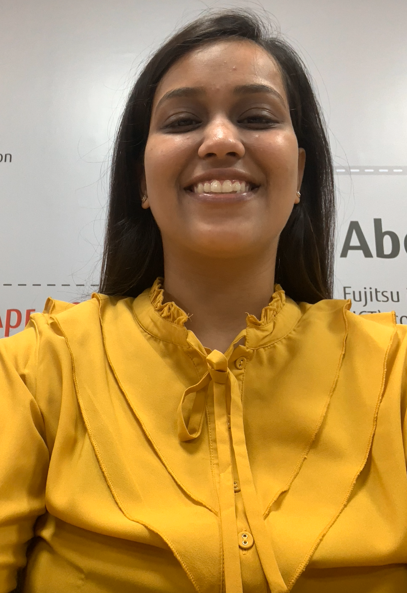
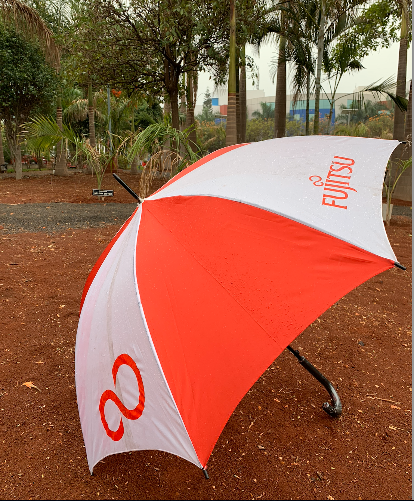
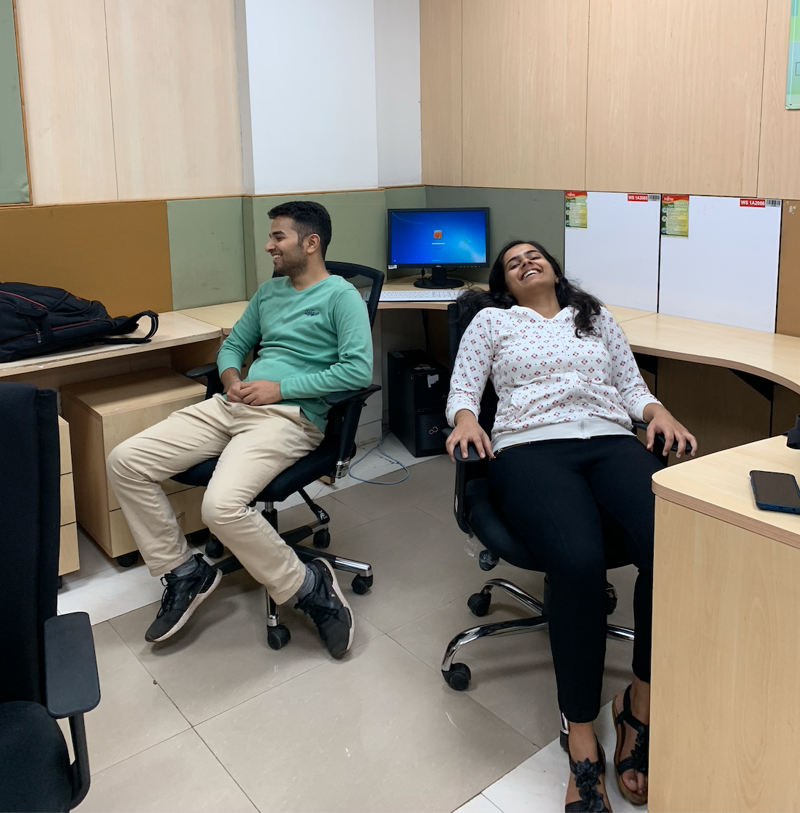
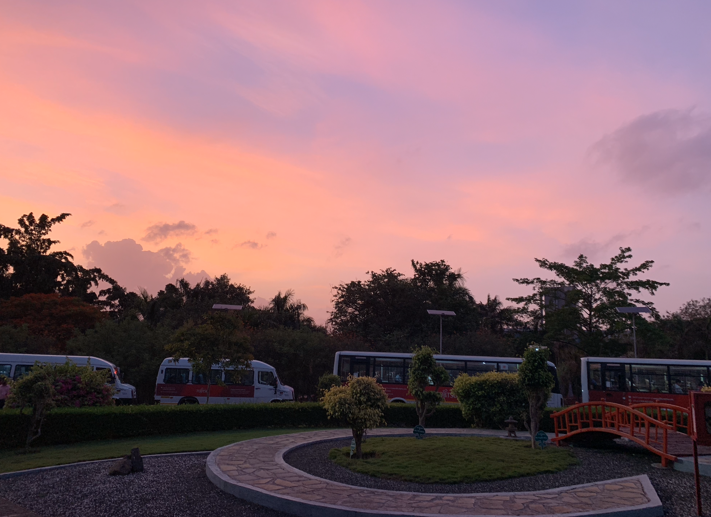
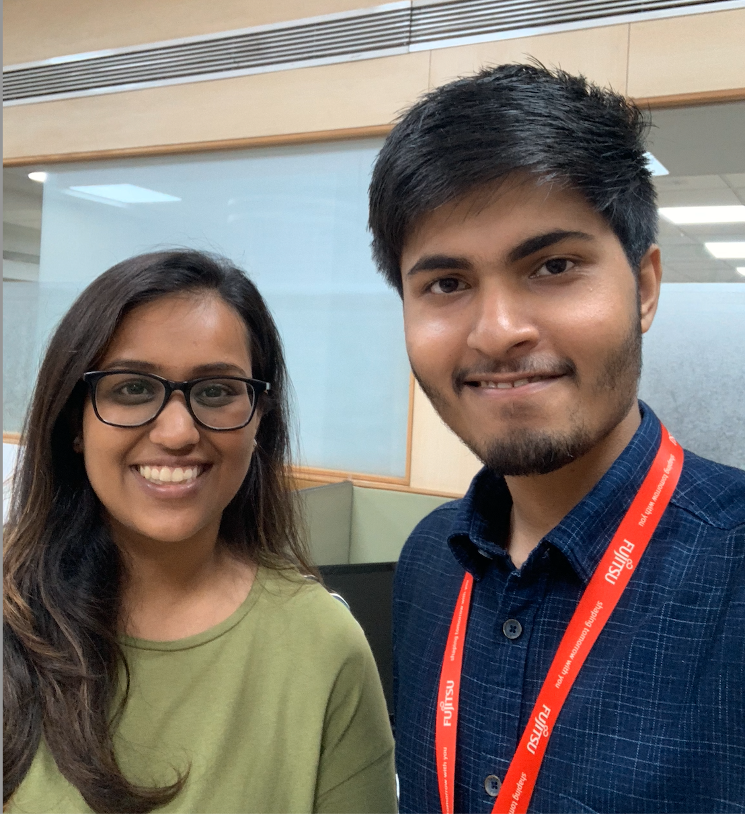
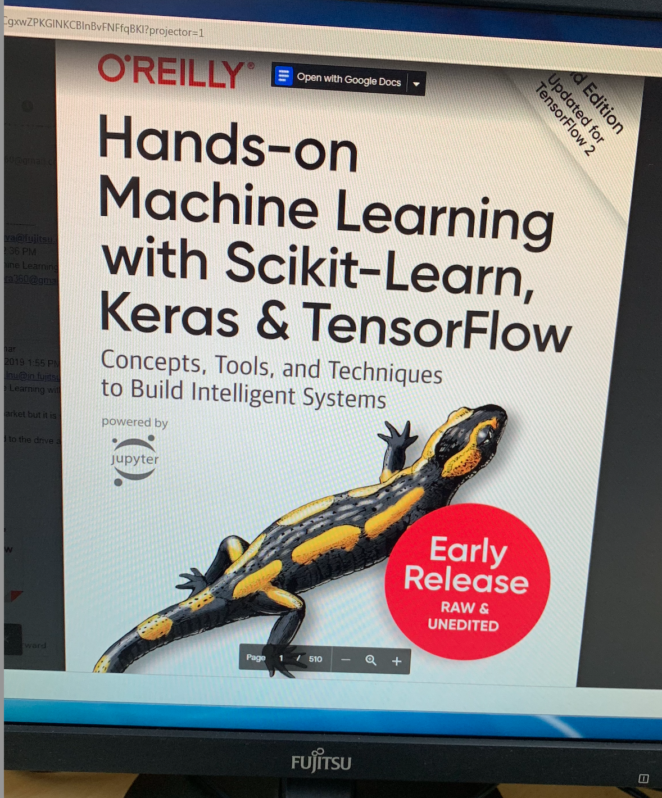
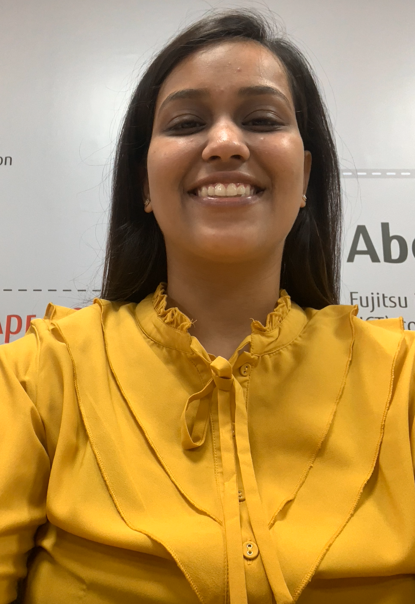
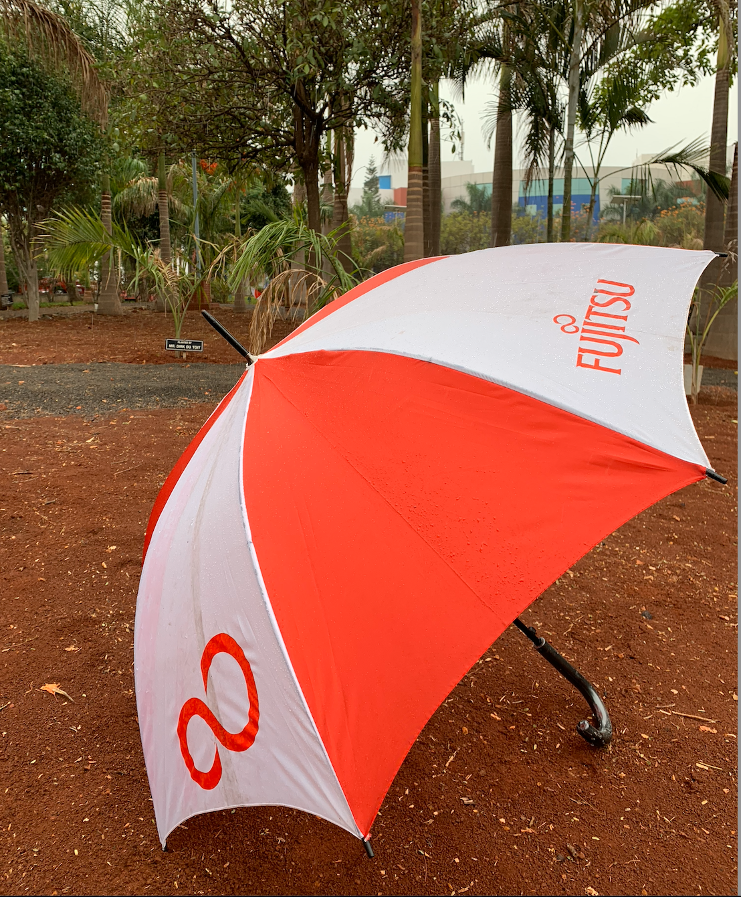
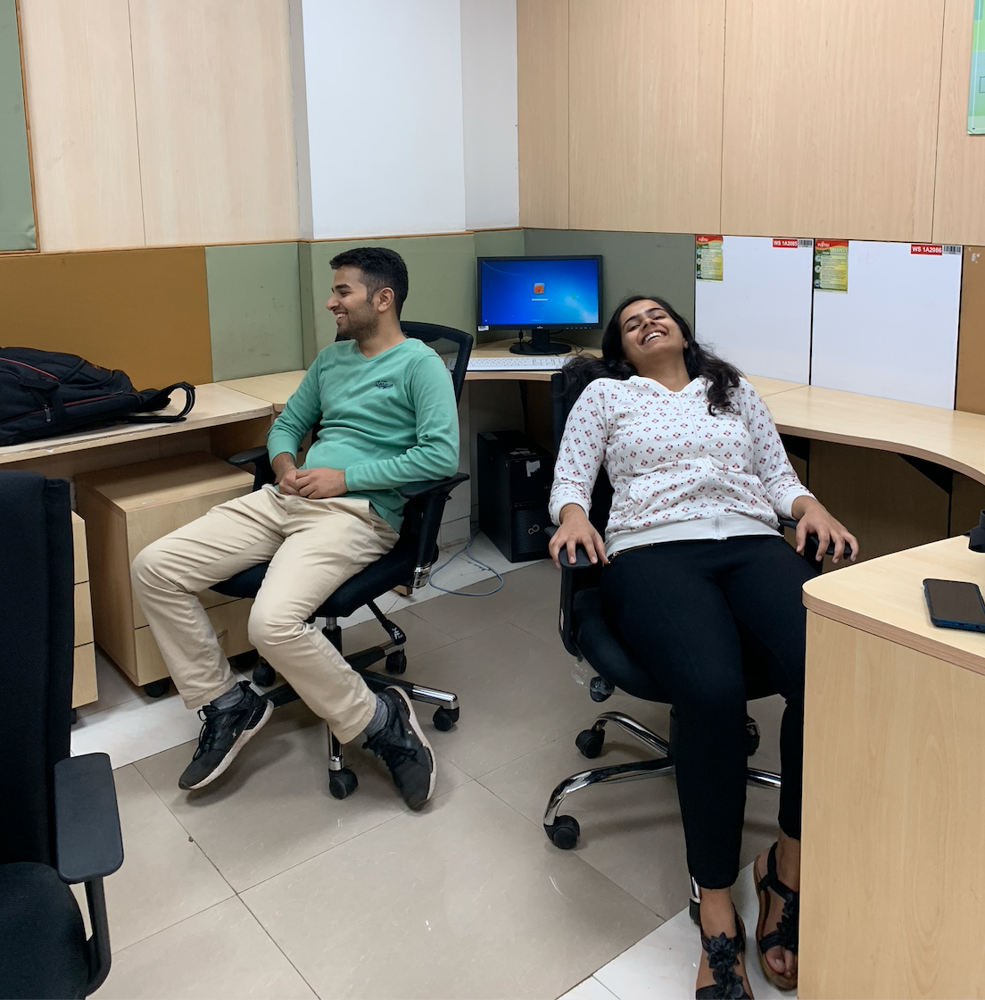
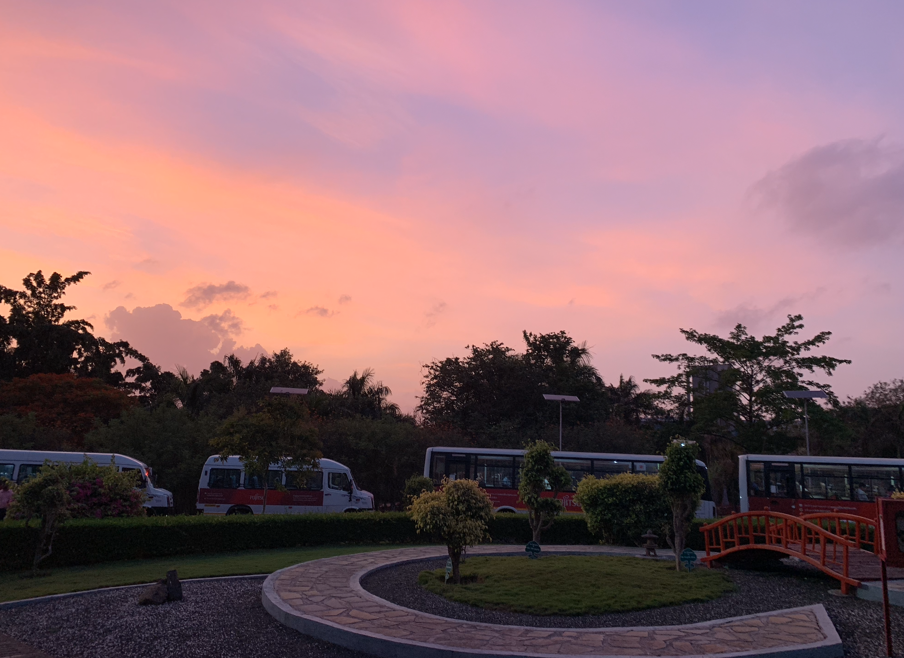
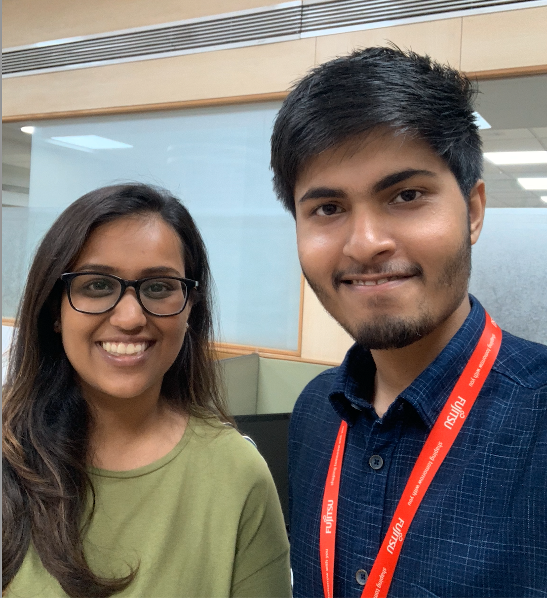
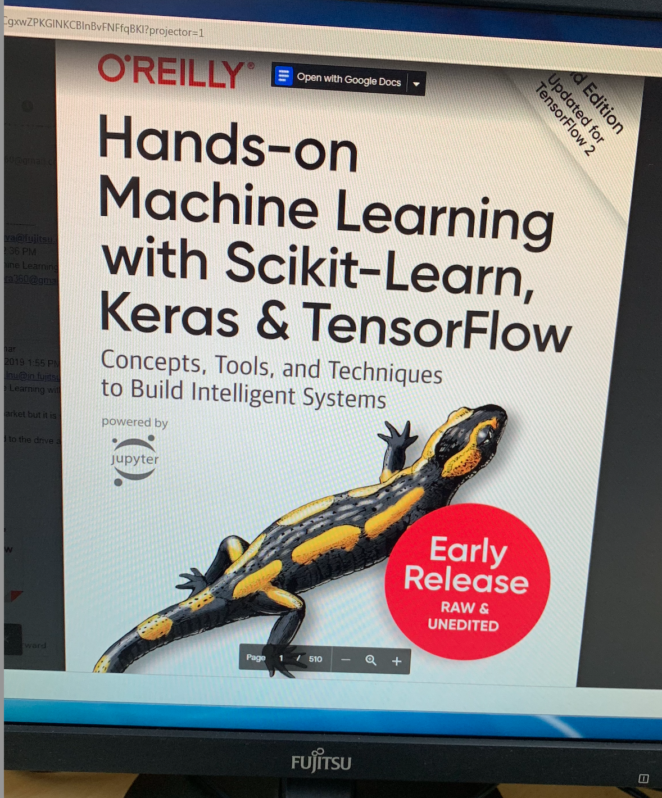